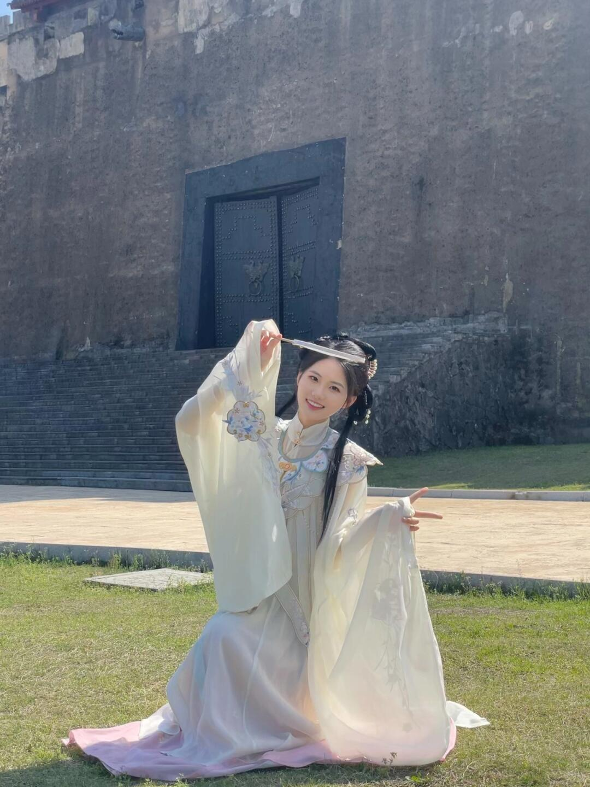

第 1 张 / 共 7 张
直觉
汉服的轻盈白纱和古城墙的厚重灰面形成反差，很有“横店一日游写真”的氛围。人物姿态有戏曲感，袖摆和发饰让画面有流动感。
技法拆解
- 光线偏硬，白色衣料已有高光溢出，建议拍摄时优先保住衣服细节。
- 背景城墙质感好，但人物离背景太近，层次略平。
- 构图上人物居中可用，但头顶大面积墙面偏空，可稍微低机位或拉近。
- 草地、墙面、浅色汉服色彩统一，适合走柔和古风调。
实拍操作（佳能 R10）
模式拨盘选 Av 光圈优先，方便控制人像虚化，同时让相机自动应对户外光线。推荐参数：光圈 f/4-f/5.6，快门不低于 1/500s，ISO 100，评价测光或高光优先测光，对焦用 伺服AF + 人脸/眼睛检测。镜头建议 RF-S 18-150mm 用 50-80mm 端，或 RF 50mm F1.8 拍半身更干净。现场先让人物离城墙远一些，站到斜侧光位置；让袖子展开形成线条；等风吹纱、手势到位时连拍，曝光补偿可设 -0.3 到 -0.7EV 保住白衣。
后期思路
整体往“小红书古风写真”方向走：降低高光、拉回白色衣料细节，适度提阴影让脸和衣纹更柔。色彩可压低绿色饱和度，墙面加一点暖灰，人物皮肤和汉服保持干净通透。